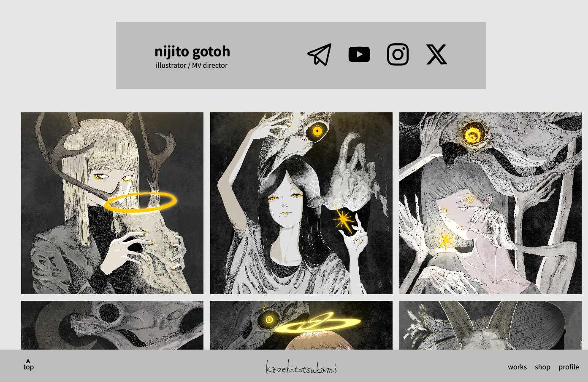
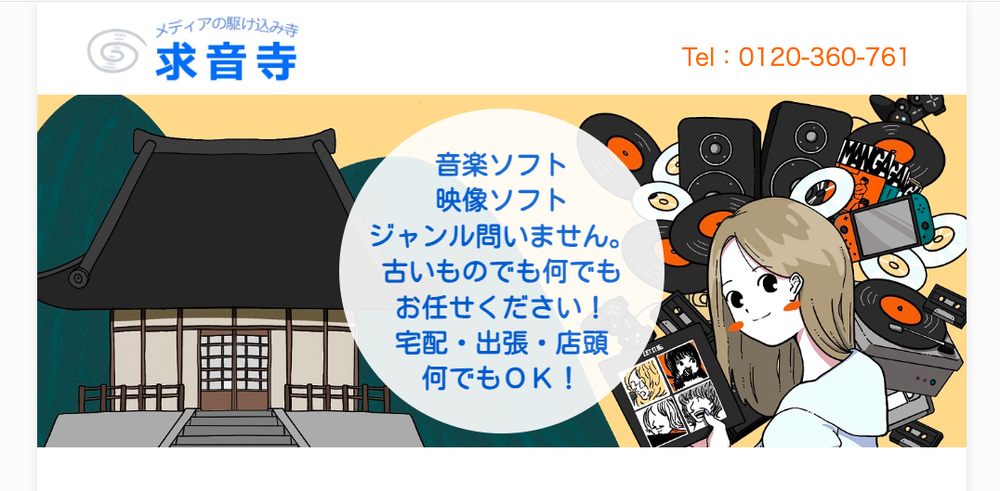

vs code / procreate / photoshop / illustrator
my portfolio site
web制作を学んできたうえでの中間試験のような気持ちで作りました。
テンプレートやポートフォリオサービスは様々ありますが、自分が求める仕様が施されたものを作りたいという思いもあり、0から完成まで手書きで制作しました。
自分の実力を理解するとともに、実装したい仕様やデザインを考えるきっかけにもなりました。
html、css、javascriptで構成されています。

vs code / procreate
神戸レコード倶楽部 求音寺
学生時代にアルバイトしていた会社のサイトです。
最初は挿入するイラストを頼まれたのですが、サイト全体のレイアウトも決めながらの方がいいだろうと一部コーディングを任されました。
サイト内のイラストは全て描き下ろしたものとなっています。
中古買取業の会社で、公式のサイトは元からありましたが新たに窓口を増やすとのことでお手伝いさせていただきました。

vs code / procreate / photoshop / illustrator
純喫茶・犬
学生時代に制作した架空のお店を想定したサイトです。
dart sassの導入実験も踏まえてリニューアルするつもりで制作しました。
初めてコーディングというものに触れ、出会いはあまりいいものではなかったことを覚えていますが、当時を振り返りながら書き直しているうちに過去の自分では考えられないほど現在はweb制作に興味があることに気がつきました。
自らのポートフォリオにも新たな技術をこれからも盛り込んでいきたいと考えています。